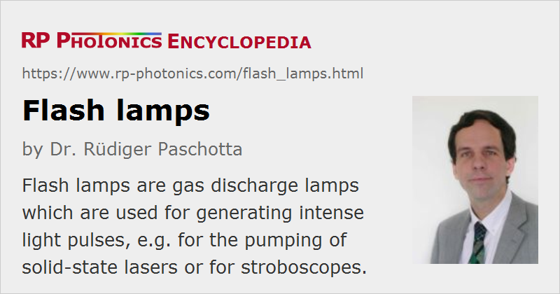

Flash Lamps
Definition: gas discharge lamps which are used for generating intense light pulses
Alternative term: flashlamps
More general term: gas discharge lamps
German: Blitzlampen
Category: non-laser light sources
How to cite the article; suggest additional literature
Author: Dr. Rüdiger Paschotta
Flash lamps (or flashlamps) are gas discharge lamps which are used for generating intense light pulses. This is in contrast to arc lamps, which are designed to be operated continuously. The outer appearance of a flash lamp is often quite similar, but there can be various differences, particularly concerning the metal electrodes:
- While arc lamps may have pointed cathodes, it is usually better to use rounded electrode shapes (see Figure 1), using a larger surface area, for flash lamps, which are operated with high peak currents. One tries to obtain a smooth distribution of the current, avoiding “hot spots” which might lead to sputtering of cathode material.
- Also, it is necessary to use electrode seals which have a low enough electrical resistance to apply the high peak currents; that largely excludes the use of ribbon seals, for example. Rod seals are most common.
- The glass envelope is often somewhat thicker for increased mechanical robustness.

Most flash lamps are based on noble gases like xenon, krypton or argon. Particularly xenon lamps are quite common as broadband emitters of white light. It is generally not feasible to use metals or other materials which would first have to be evaporated, since the drive pulses are too short for such processes; the pulse durations are usually well below one millisecond.
Many flash lamps produce a substantial amount of ultraviolet light. That can be best utilized with a a well UV-transmitting glass envelope, for example made of quartz (actually fused silica). In other cases, UV generation is unwanted; that can be suppressed by using envelopes of doped glass, exhibiting increased UV absorption.
There are actually some other types of flash lamps, not based on a gas discharge, but e.g. on some chemical reaction. Such lamps have sometimes been used in photography, but are not treated in this article.
Operation Parameters
The most important operation parameters are the following:
- Energy per flash: this is the recommended electrical energy (in joules) required for firing a single flash.
- Anode voltage: the required electrical voltage during the main pulse; a substantially more intense ignition pulse may be required in the initial phase.
- Maximum flash rate: this is the maximum repetition rate (light pulses per second) with which flashes can be fired. For limited bursts, it may be permissible to have a substantially increased flash rate.
- Pulse duration: Different kinds of drivers circuits are used in different pulse duration regimes from microseconds to milliseconds.
The mentioned electrical operation parameters give only a rough impression of how such lamps need to be operated. The details of the electrical driver can be quite important for the lamp lifetime.
Power Supplies for Flash Lamps; Techniques for Triggering
Flash lamps need special lamp power supplies which can provide carefully controlled electrical pulses with high peak voltage and currents. Power supplies with different designs are available, adapted to specific types of lamps. They can be based on different technologies.
The electrical energy for a flash lamp is usually taken from a capacitor, which has previously been charged to some voltage. In most cases, that voltage alone is not sufficient for ignition of the lamp. Therefore, some additional means are required for triggering the discharge.
Note that while some flash lamps have only two electrodes, others have one or more additional trigger (or sparker) electrodes which must be supplied with suitable voltage spikes for ignition.
The following sections explain some technical approaches.
External Triggering
A technically simple approach (concerning the required electronics) is external triggering, using an additional electrode, which is usually outside the glass envelope. For example, it can be a nickel wire wound around the glass tube. Using a small external trigger transformer, one can apply a high voltage pulse between the trigger electrode (sparker electrode) and the cathode, which generates a spark streamer that subsequently leads to the start of the main discharge between cathode and anode. The generation of the spark streamer involves capacitive effects, so that it can work despite the insulating glass. Both a sufficiently high trigger voltage and duration of the trigger pulse are necessary for reliable triggering.
In many lamp driver circuits, an inductor in the connection from the main capacitor and the flash lamp limits the peak current. (The cable itself may already introduce a significant inductance.) One usually tries to designed such a circuit for critical damping, avoiding oscillations. The circuit characteristics (including the lamp impedance) determine the electrical pulse length and thus also the optical pulse duration. Are also more sophisticated pulse forming networks, containing multiple capacitors and inductors.
An advantage of external triggering is that the trigger transformer can act independently of the part of the circuit which provides the main electrical pulse. A disadvantage, however, is that the external trigger electrode creates electrical insulation problems e.g. when a flashlamp is used in a pump chamber of a lamp-pumped laser. Therefore, such lamp applications usually need to work with a different triggering technique. A further problem is that the ignition spark pulls the discharge towards the lamp envelope, which may reduce the lamp lifetime.
There are also lamps with a trigger electrode inside the envelope. That can have various advantages, such as lower trigger voltage, mitigation of insulation problems and longer lamp lifetime.
Series Triggering
Series triggering can be applied to lamps without an additional trigger electrode. Here, the secondary winding of the trigger transformer is connected in series to the lamp (usually on the cathode side). The voltage spike generated by the trigger transformer adds to the voltage of the main capacitor such that the voltage becomes sufficient for starting the discharge.
A disadvantage of this approach is that the full lamp current must go through the secondary coil of the trigger transformer. Therefore, a substantially larger transformer is required.
Simmer Operation
Particularly for flash lamps operated at substantial pulse repetition rates, as required e.g. for the pumping of pulsed lasers, one often uses simmer operation for obtaining most reliable flashing and long lamp lifetimes. Here, between the flashes the lamp continues to be operated with a small DC current, far below the peak current for flash generation. The lamp does not have to be ignited for each flash and can thus generate many more pulses during its lifetime. The required laser power supply is then somewhat more complex, but this can be very worthwhile. The obtained pulse energies can be more consistent (lower noise) than without simmering.
High quality flash lamps, which are operated under good conditions (far below their explosion energy), can sometimes reach lifetimes of more than 100 million or even above one billion pulses. For higher energies, the achieved lifetime may be orders of magnitude lower, and simmering does not help much.
For low pulse repetition rates, simmer operation is less suitable, since much of the drive power is then used for simmering. In that regime, one may use a pseudo simmer. Here, a some time (e.g. 100 ms) before generating the actual pulse, one triggers the lamp, but only for establishing a relatively small simmer current before the main discharge is started. With that two-step startup process, the lamp lifetime can be substantially increased, particularly for low pulse energies, and at the same time the pulse stability is improved.
Circuits for Shorter Pulse Durations
If a capacitor is discharged through a flash lamp with a series inductance, as explained above, the pulse duration is limited by the characteristics of that LC circuit. For reducing the pulse duration, one has to use a capacitor with smaller capacitance and at the same time increase the charging voltage in order to achieve the required electrical energy. The capacitor voltage may then be above the ignition threshold of the lamp. In such cases, one needs to use an additional high-voltage switching device, which allows for fast switching and can handle the very high peak current. For such purposes, a solid state switch may no longer be suitable; instead, some other devices like a spark gap thyratron or an ignitron may be employed. In order to achieve a reasonably long lamp lifetime despite the high peak current, one may in addition realize simmer operation (see above).
Circuits for Longer Pulse Durations
For longer and variable pulse durations, there are electronic circuits with a high voltage switching transistor, which can limit the lamp current according to its drive signal. That way, the lamp current can be well controlled even for pulse durations of tens of milliseconds. If an approximately constant current is applied throughout the pulse, this is called square wave operation.
Cooling
Flash lamps operated with moderate energies and particularly with low repetition rates can often work with simple convective air cooling only. On the other hand, devices with high repetition rates and intense pulses often need to be cooled quite aggressively, in most cases with a turbulent flow of deionized water. For example, most laser lamps are cooled that way.
In some cases, one does not even electrically insulate the electrodes from the cooling water. Of course, the cooling water then needs to have a high resistivity, is achieved by proper demineralization.
Lamp Lifetime
Every emitted flash causes some degradation of a flash lamp due to the harsh conditions experienced by the electrodes and the length envelope. Some important degradation mechanisms are the following:
- With every shot, some amount of material from the lamp envelope is ablated. That problem is dominant in the high energy regime.
- Also, some material is sputtered from the cathode and forms deposits on the lamp envelope, which reduce the light output.
The resulting lifetime can differ by orders of magnitude between different situations – not only because of lamps with different quality, but most importantly due to various aspects of the operation conditions.
A particularly important parameter is the ratio of the electrical input energy E0 to the explosion energy Ex of the lamp. That explosion energy is the electrical energy which causes instant explosion, i.e., with a single pulse. As a rough estimate, in the high energy regime (where ablation of the lamp envelope is the limiting factor) one can calculate the lamp lifetime in terms of the possible number of pulses as (E0 / Ex)−8.5. For example, one can expect roughly 10,000 pulses if that energy ratio is 1/3, or 1 million pulses if the ratio is 1/5.
In the low energy regime, where the explained rule would suggest more than one million pulses, the lifetime is not as long as predicted, since electrode-related effects (sputtering at the cathode), have a weaker dependence on the pump energy, become a limiting factor. In that regime, simmer operation substantially improves the lifetime, whereas in the high energy regime it does not help much.
Particularly for high energy operation, the end of life is often clearly apparent as an explosion of the lamp. In other cases, the light output may be degraded to a level where it is no longer sufficient for the application.
Electromagnetic Interferences
Due to the quite high peak currents, which can be hundreds of amperes even for relatively small lamps, substantial electromagnetic interference may be caused. Particularly in laboratory environments, that can be quite disturbing. As that electromagnetic radiation may be radiated by the power supply, the length and any cables, careful shielding should be supplied at all those locations.
Timing Jitter
Between the application of the trigger pulse and the formation of the light output, there is some delay time of typically a couple of microseconds. That delay time has some fluctuations, e.g. due to irregularities of the gas discharge, and those lead to a timing jitter of the light pulses. That can be disturbing in some applications. The magnitude of jitter generally decreases substantially with increasing lamp voltage.
Applications of Flash Lamps
Imaging with Strobe Lights
Flash lights are used for high speed imaging, e.g. in industrial settings. Even rapidly moving parts can be accurately imaged when being illuminated with a short light flash.
Particularly xenon flash lamps are used for stroboscopes, applying a periodic sequence of pulses. Here, they usually need to be fired with a substantial repetition rate. They should thus be optimized for that mode of operation, possibly with a limitation of the applied electrical pulse energy.
Some strobe lamps are available with a very short arc (small electrode gap), so that one approaches a point source. Such a lamp format is also referred for various scientific applications.
Medical and Cosmetic Applications
Various flash lamps are used in dermatology, i.e., for skin treatments, including medical and cosmetic treatments of acne, age spots, and for hair removal and tattoo removal.
Spectroscopy
Flash lamp systems can be used in spectroscopy. For example, one may use a xenon flash lamp for exciting fluorescence in a sample; spectral analysis of the fluorescence light delivers chemical information. Such methods are applied in clinical chemistry and for air and water pollution analysis, for example.
Pumping of Solid-state Lasers
Flash lamps are still widely used for pumping of pulsed, namely of free-running or Q-switched) solid-state lasers. In particular, krypton and xenon lamps are used for pulsed YAG lasers. While xenon lamps are somewhat more efficient themselves, the emission spectrum of krypton lamps fits somewhat better to the neodymium absorption.
Usually, laser flash lamps have the form of thin cylindrical tubes, which are mounted in parallel to a long laser rod, all within a diffuse reflector in a pump chamber. Particularly in case of Q-switched lasers, such lamps need to emit relatively short pulses with durations of e.g. below 100 μs, since the gain medium of such a laser can usually not store the provided energy over a longer time.
Although diode-pumped lasers can achieve a far higher wall plug efficiency, flash lamps are still widely used in applications with very high pulse energies, essentially because their cost per watt (or per joule of pulse energy) is far lower. Note also that for lasers with low pulse repetition rates and thus low average power (or few operation hours), the poor energy efficiency may not be very relevant. The cooling demands are also moderate for low repetition rates.
For more details, see the article on lamp-pumped lasers.
Suppliers
The RP Photonics Buyer's Guide contains 17 suppliers for flash lamps.
Questions and Comments from Users
Here you can submit questions and comments. As far as they get accepted by the author, they will appear above this paragraph together with the author’s answer. The author will decide on acceptance based on certain criteria. Essentially, the issue must be of sufficiently broad interest.
Please do not enter personal data here; we would otherwise delete it soon. (See also our privacy declaration.) If you wish to receive personal feedback or consultancy from the author, please contact him e.g. via e-mail.
By submitting the information, you give your consent to the potential publication of your inputs on our website according to our rules. (If you later retract your consent, we will delete those inputs.) As your inputs are first reviewed by the author, they may be published with some delay.
See also: gas discharge lamps, arc lamps, xenon lamps, pump chambers, lamp-pumped lasers, lamp power supplies
and other articles in the category non-laser light sources
|  |
If you like this page, please share the link with your friends and colleagues, e.g. via social media:
These sharing buttons are implemented in a privacy-friendly way!